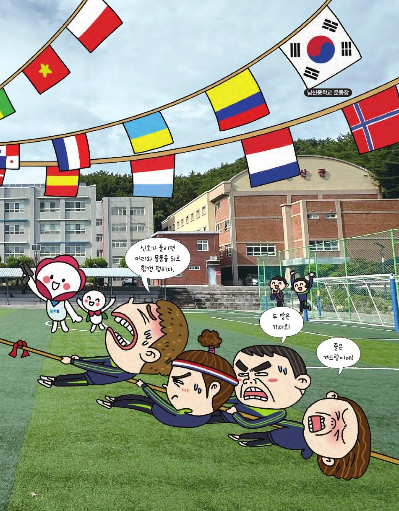

어떤 게임은 전략을 알기만 하면 상대를 반드시 이길 수 있어 마술처럼 보여요. 이렇게 반드시 이길 수 있는 전략을 필승 전략이라고 해요.
★ 이 단원에서는 — 게임의 규칙을 이해하고 필승 전략을 찾을 수 있다.

📍 남산중학교 운동장| n | 7 | 8 | 9 | 10 | 11 |
|---|---|---|---|---|---|
| 마지막에 적힌 수 | |||||
| 홀/짝 |
두 수를 지우고 합을 적든 차를 적든, 적힌 수 전체의 합의 홀짝은 변하지 않아요(a+b와 a−b는 홀짝이 같아요). 그러니 마지막 수의 홀짝 = 1+2+…+n = n(n+1)/2의 홀짝. n=6이면 21(홀수) → 어떻게 두어도 나중에 한 사람이 이겨요. 필승 전략은 "수를 어떻게 지우느냐"가 아니라 먼저 할지 나중에 할지를 고르는 거예요!
첫 수는 반드시 1을 귀신에게 주게 돼요. 1 다음엔 가장 큰 소수부터! 소수를 가져가면 귀신은 아무것도(1은 이미 없으니) 못 가져가요. 그다음엔 "남은 약수가 딱 하나뿐인 수"를 찾아 가져가면 손해가 가장 적어요. 가져갈 수 없는 카드가 없도록 순서를 잘 짜는 게 핵심이에요.
11을 가져가려면 바로 전에 8을 가져가야 해요. 내가 8을 가져가면 상대는 9 또는 9·10뿐이니까요. 같은 방법으로 8 전에는 5, 5 전에는 2. 가져가야 할 카드 2, 5, 8, 11은 모두 3으로 나눈 나머지가 2예요. 즉 먼저 2를 가져간 뒤, 상대와 내가 가져가는 카드가 합해서 3장이 되도록 하면 이겨요.
최대 k장이면 (k+1)로 나눈 나머지가 n과 같은 카드가 핵심 카드예요. 15장, 최대 2장: 15÷3 나머지 0 → 3, 6, 9, 12, 15가 핵심 → 먼저 하는 사람이 불리! 위의 "핵심 카드 표시"를 켜고 확인해 보세요.
세 줄 이상 팝잇 게임의 필승 전략은 이진법과 관련이 있어요. 각 줄의 버블을 2³, 2², 2, 1 단위로 묶은 뒤, 자기 차례에 같은 자릿값의 묶음이 짝수 개가 되도록 만들면 이깁니다.